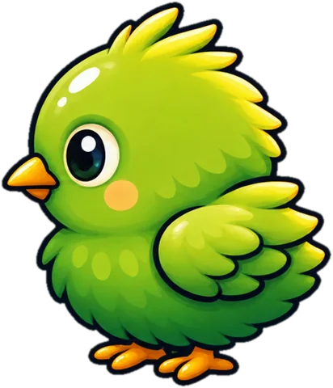

 Grass
Grass Wind
WindTap a stage to read its story.
This Plumchick is a round, downy green-and-yellow chick with a small orange beak and bright curious eyes. Its plumage is the color of fresh spring leaves, soft and ruffled in every direction. It clings to the Gale Ridge's sheltered ledge-nests with oversized yellow feet, letting the gale winds ruffle its feathers without ever losing its grip. It chatters constantly - a rapid quiet clicking - and stuffs seeds and leaf fragments into cracks in the rock wall, rarely finding them again later. The Gale Ridge's howling winds seem to carry its tiny voice for remarkable distances.
Field note: Plumchick stores at least thirty seeds a day but retrieves fewer than five - the rest sprout into small cliff-plants that line the spire paths.
Storm Spire. Plumchick and its family are found in the Storm Spire. See everyone who lives there.
Share a Bond Food that matches its types to become friends. Plumchick loves:
A Bond Food is not a trick. It joins your spirit with the Kimuro's spirit, and only when it chooses you.
Print the Kimuro adventure packs: mazes, cards, a board game and Bond Mark medals.
See the printable packs